Ready, Set, Succeed: Your Guide to Prepare for CSRD
Get ahead of the game and ensure your business is fully compliant with CSRD using our comprehensive
online programme,
complete with step-by-step guidance, practical tools, and unique data-driven features to help you
succeed.
About our programme
What is CSRD?
As of 2024 a new legislation will be introduced by the European Commission. Large organizations that
have specific criteria must comply with the rules and regulations of the CSRD. CSRD stands for
Corporate Sustainability Reporting Directive. These corporate sustainability reporting directives
will replace the existing directive on non-financial reporting (NFRD). The directive requires
organizations to do a broad risk analysis (materiality analysis) and report on to be specified
non-financial indicators.
What are the steps to becoming a sustainable organization?
1. Inform
2. Measure
3. Reduce
4. Compensate
Our programme is designed to help organizations
measure and communicate the impact they have on various
levels. By utilizing an interactive impact dashboard, organizations can easily track their progress
and
communicate their achievements to stakeholders.
To begin, the programme offers a series of workshops that guide organizations through the process of
measuring their impact. These workshops provide the necessary tools and knowledge to collect
relevant
data and analyze it effectively.
Once organizations have collected their data, they can then use the development time offered by the
programme to build a custom impact dashboard. This dashboard is tailored to the organization's specific
needs and showcases their impact on financial, social, and ecological levels.
The dashboard is interactive, meaning that organizations can easily update their data and view their
progress in real-time. This allows organizations to track their impact over time and make adjustments as
needed.
Overall, our programme is designed to empower organizations to measure and communicate their impact in
a
meaningful way. By providing the necessary tools and resources, we aim to help organizations make a
positive difference in the world.
Our CSRD Packages
Digital CSRD Preparation
A full online “Do-It-Yourself” program
Your online program that guides you through the complex CSRD process. It's a step-by step digital
program that is educational and supports you and your team with a clear structure, practical
tools, unique data driven tools, templates, and suggested actions to become compliant to CSRD.
Consulting: Get started with CSRD
reporting
Kickstart your CSRD journey
With the 'Get started with CSRD' package you will be supported in getting everyone on board,
insights in what needs to be done, get an indication of the budget for setting up the
non-financial reporting processes, and preparing the support team with their tasks, roles &
responsibilities.
Consulting: CSRD reporting
Full support in every step in the CSRD journey
Get your organization ready for the CSRD (Corporate Sustainability Reporting Directive) with help
of our consultants and their structured process. Reduce the implementation time with help of our
automated tools.
Our clients
At Move to Impact we help organizations gain
insight
into their impact on an economic, social, and
environmental level. We do this by offering practical tools that guide organizations, like you,
towards their next step in the sustainability journey.
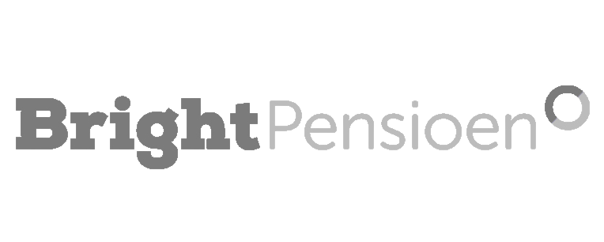
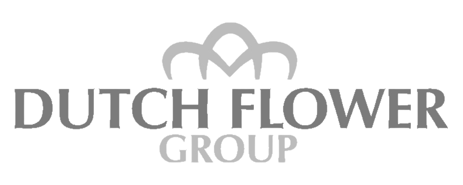
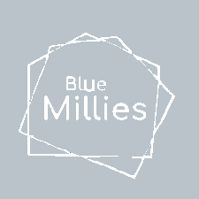
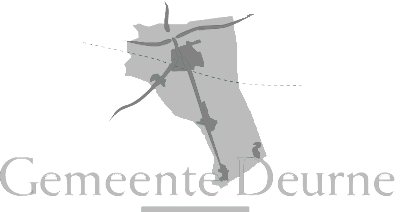
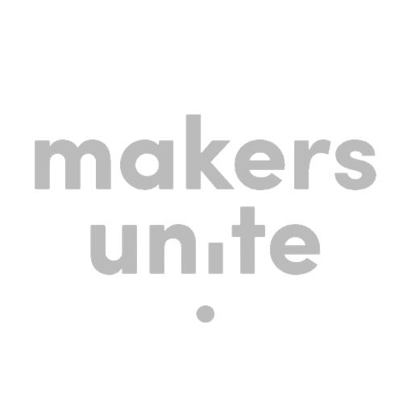
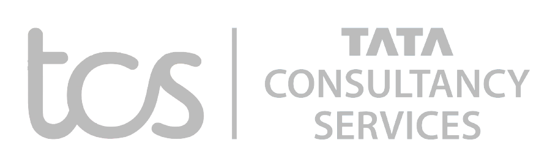
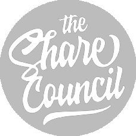
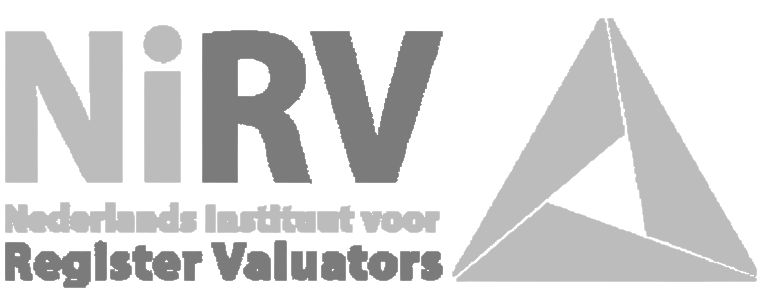
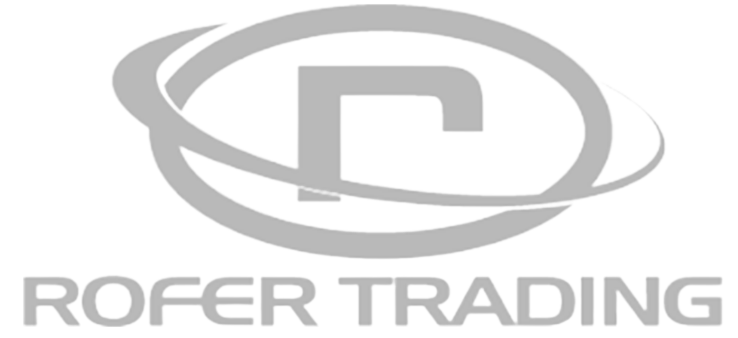
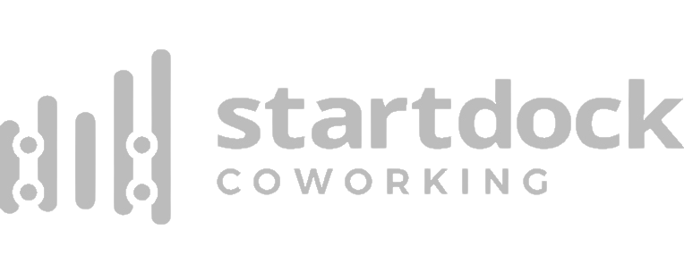
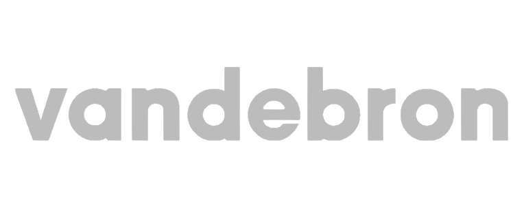
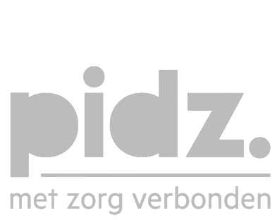
Why choose us?
Get ready to
revolutionize the way you approach projects with our online programme! Designed for ultimate
flexibility, our programme is always available and constantly updated with the latest insights and
knowledge, giving you a competitive edge.
No juniors, just expertise knowledge. Plus, with our programmme's high learning curve, expensive
consultants become a thing of the past.
Don't miss out on the opportunity to streamline your
approach and save on costs. Sign up for our programme today and take your projects to the next
level!
Introducing our revolutionary online programme, designed to transform the way you work on projects
forever. Our programme is a game-changer in terms of flexibility, as you can access it whenever it
suits
your schedule. No more waiting around for limited-availability consultants - our programme is always
ready
and waiting for you to use.
What makes our programme stand out is that it is constantly updated with the latest insights and
cutting-edge knowledge. While consultants may struggle to keep up with the fast-paced changes in the
industry, our programme is always up-to-date, giving you a significant competitive edge in your
projects.
Not only that, our programme's easy integration is a huge advantage when it comes to team members.
Knowledge and learnings are stored in the programme, making it easy for new members to catch up and hit
the ground running.
No more worrying about junior team members slowing down your progress. Our programme
is designed to transfer only expertise knowledge, ensuring efficient progress throughout your project.
With our programme, you can say goodbye to the days of wasting time on weekly project status meetings.
You
can easily monitor progress and keep track of everything in one place, making project management
streamlined and easy.
What's included?
Our programme is designed to give you everything you need to succeed in your projects.
From step-by-step guidance to practical tools, our programme is packed with features to
help
you
achieve
your goals.
Here's what you can expect:
Clear structure that guides you through every step in the implementation process
All the information you need to understand each phase of CSRD
Actions and advice for every step to take to be CSRD compliant
Flow charts visualizing the process
Answers to all CSRD questions you didn’t know you had
Data driven & automated tools
Templates for the materiality analysis, stakeholder analysis, stakeholder survey,
industry
benchmarking, etc.
Preparation steps for an impact dashboard
Learnings from other companies
And much more!
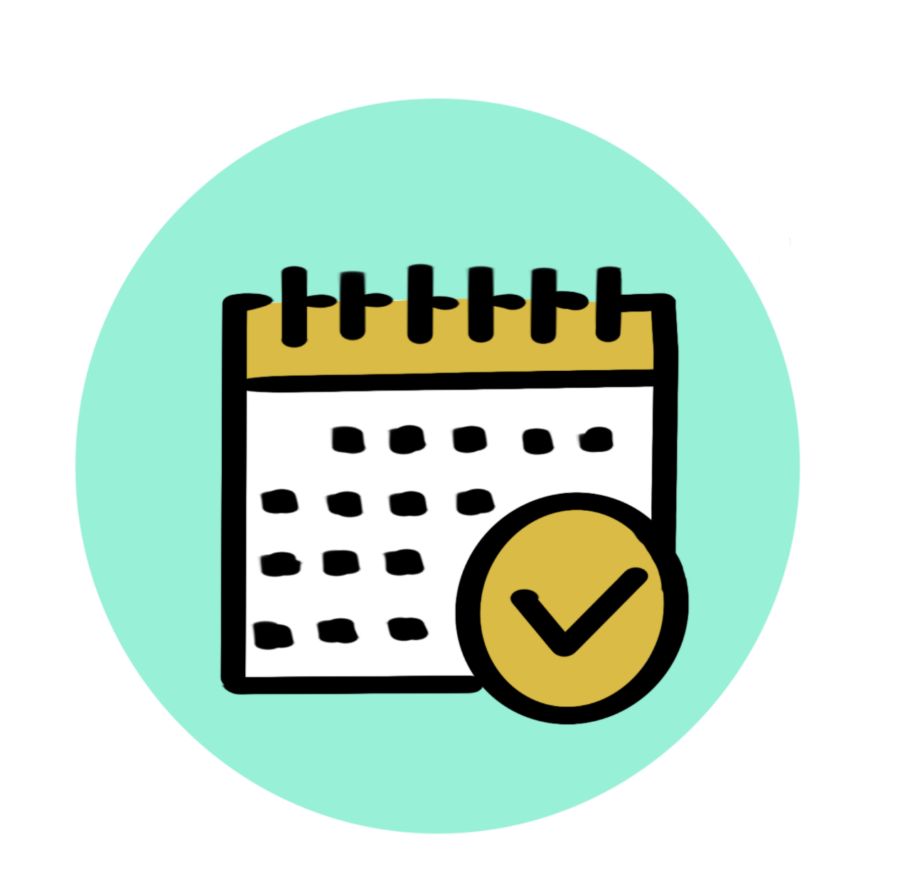
Duration of Programme
Preparation Phase: 6-9 months (incl.
double
Materiality Analysis), to become CSRD compliant
12-18 months
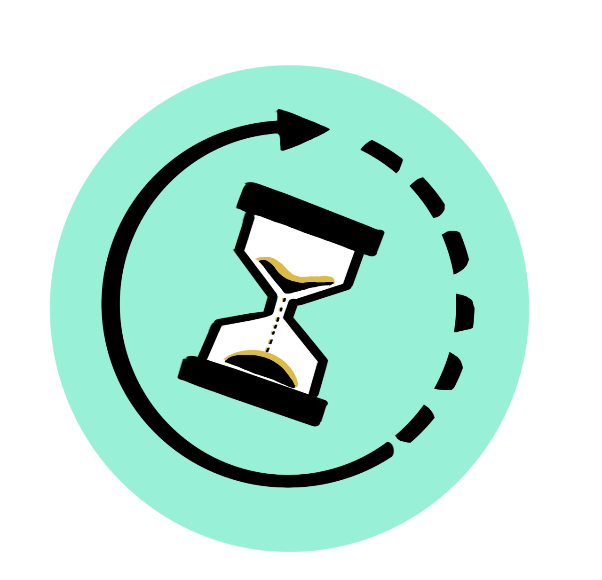
Hours per week
ca. 4 hours for the project manager,
incl.
practical actions
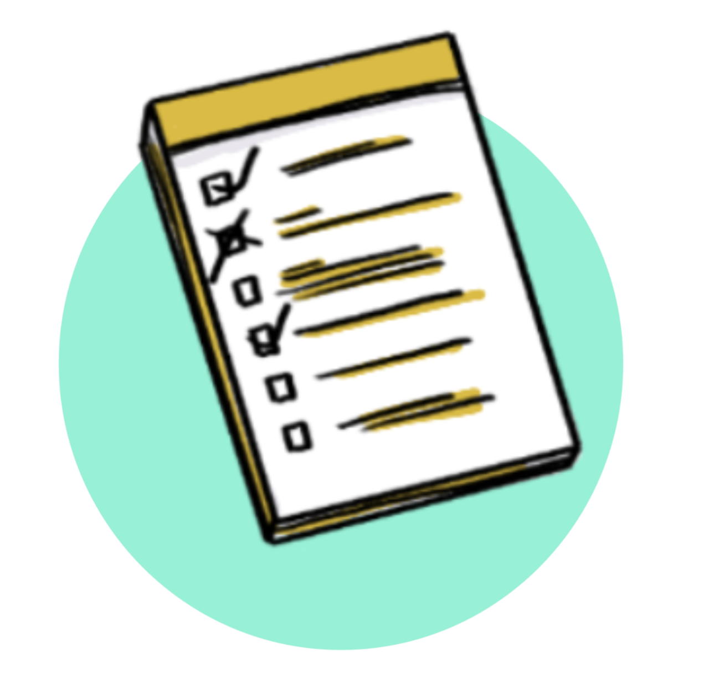
Get in action
Each chapter has practical tasks and
material
to
guide you step-by-step through the CSRD preparation
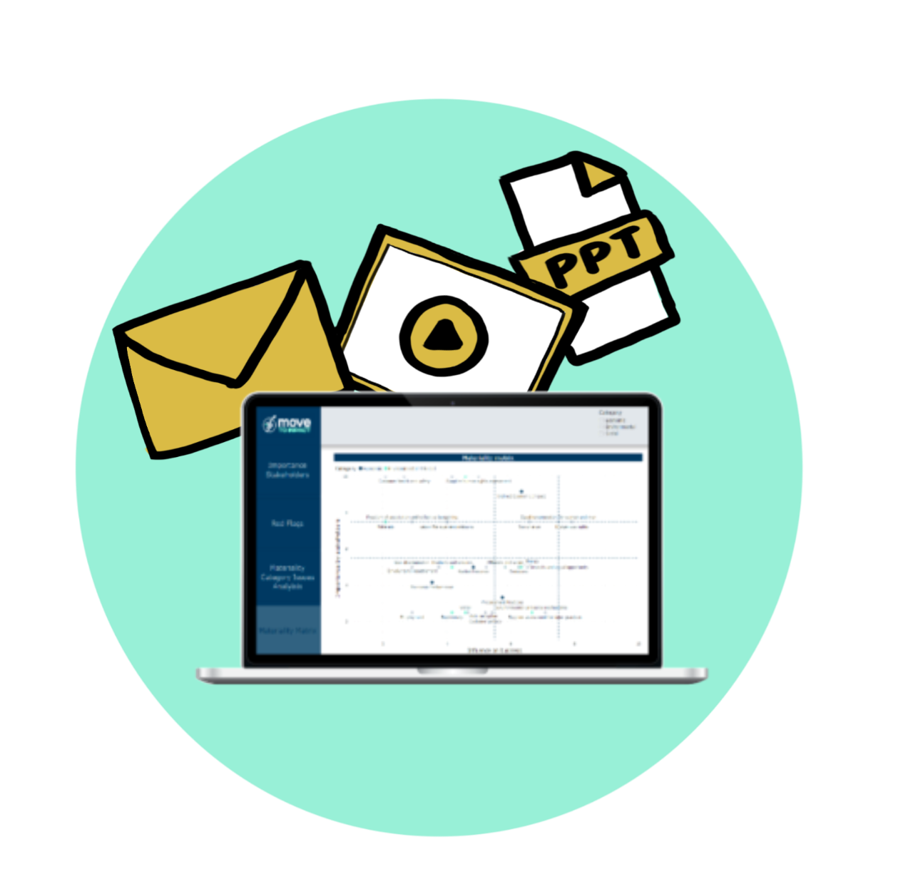
Support
E-mail & ppt templates, video
explanation &
optional consulting support or possibility to add automated materiality analysis tool
Want to see a demo of the platform?
Don't miss
out on experiencing our
amazing product! Reserve a demo now to see it in action.
Our team will tailor the demo to your needs and answer all your questions. Take the first
step toward transforming your business today!